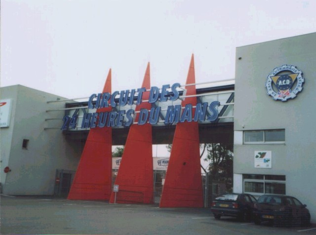

Numbers on the map represent the location of where the photos were taken. Click the hyperlinks above to view the photographs.
Le Mans - Circuit Bugatti, France
Type: Permenant Road Course
Length: 2.655 Miles / 4.273 km
Photographs Taken: August 2003
The Bugatti circuit was designed by Charles Deutsch and constructed in 1965, utilising the start/finish straight and first corner of the Sarthe circuit. The circuit then wound its way around the back of the pit garages through a series of hairpin bends to complete the lap. From the mid 70's to the early 90's the French Motorcycle GP alternated between the circuit and Paul Ricard. Apart from hosting the Formula 1 French Grand Prix in 1967, the circuit was not used regularly by cars until 1986, from when it regulary hosted a Formula 3000 race. During qualifying for the French Motorcycle Grand Prix of 1995, Alberto Puig suffered career ending injuries and consequently the circuit underwent significant changes to its layout in an attempt to improve safety. As a result of these changes, (and the unavailability of Paul Ricard following its conversion to the HTTT), the MotoGP returned in 2000.
The cars shown on the circuit in the following photographs are from the racing school.
|| Contents | Page 1 - (photos 1-5) | Page 2 - (photos 6-10) || Home ||
Numbers on the map represent the location of where the photos were taken. Click the
hyperlinks above to view the photographs.
Return to racingcircuits.net's Photo Archive Main Index

Circuit Entrance
Photographs kindly supplied by Rob Davies. Reproduced here with kind permission.